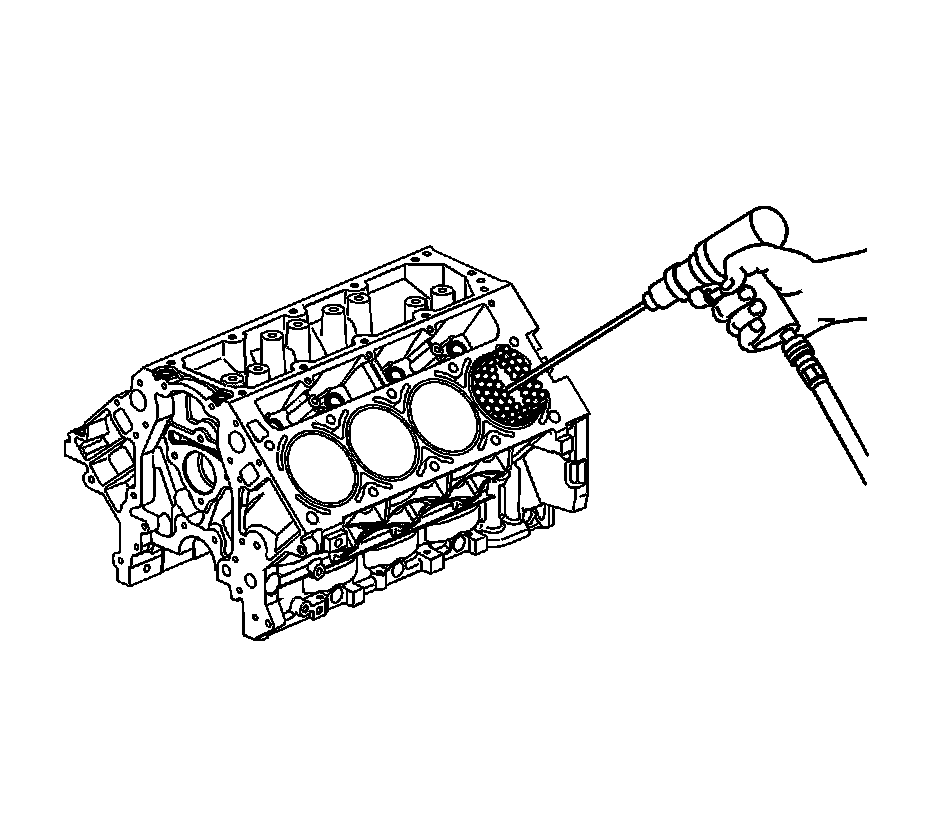
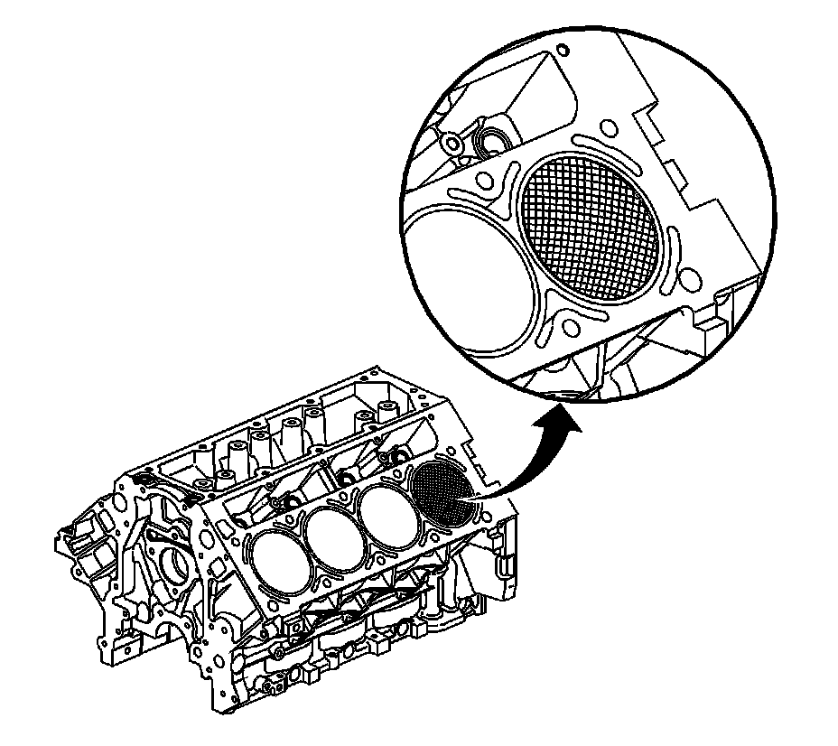

33. Cylinder Boring and Honing
Cylinder Boring and Honing
Boring Procedure
Important: A 0.5 mm (0.02 in) oversize service piston and a piston ring set are available.
1. Measure all pistons with a micrometer to determine the cylinder bore diameter.
2. Before you use any type of boring bar, use a fine file and clean the top of the cylinder block, removing any dirt or burrs. If you do not check the cylinder block, the boring bar may be improperly positioned or tilted and the cylinder bore could be bored at an incorrect angle.
3. Carefully follow the instructions furnished by the manufacturer regarding use of the equipment.
4. When you bore the cylinders, ensure all the crankshaft bearing caps are in place. Tighten the crankshaft bearing caps to the proper torque in order to avoid distortion of the cylinder bores during final assembly.
5. When you take the final cut with a boring bar, leave 0.03 mm (0.001 in) on the cylinder bore diameter for the finish honing and fit of the piston.
Honing Procedure

1. When honing the cylinders, follow the manufacturer's recommendations for equipment use, cleaning, and lubrication. Use only clean, sharp stones of the proper grade for the amount of material you remove. Dull, dirty stones cut unevenly and generate excessive heat. Do not hone to final clearance with a coarse or medium-grade stone. Leave sufficient metal so that all stone marks may be removed with fine-grade stones. Perform final honing with a fine-grade stone, honing the cylinder to the proper clearance.
2. During the honing operation, thoroughly clean the cylinder bore. Repeatedly check the cylinder bore for fit with the selected piston.
All measurements of the piston or the cylinder bore should be made with the components at normal room temperature.
3. When honing a cylinder for fit to an oversize piston, first perform the preliminary honing with a 100-grit stone.
4. Perform final cylinder honing with a 240-grit stone and obtain a 45 degree cross hatch pattern.
A 240-grit stone is preferred for final honing. If a 240-grit stone is not available, a 220-grit stone may be used as a substitute.
5. The finish marks should be clean but not sharp. The finish marks should also be free from imbedded particles and torn or folded metal.
6. By measuring the selected piston at the sizing point and by adding the average of the clearance specification, you can determine the final cylinder honing dimension required.
7. After final honing and before the piston is checked for fit, clean the cylinder bores with hot water and detergent. Scrub the bores with a stiff bristle brush and rinse the bores thoroughly with hot water. Do not allow any abrasive material to remain in the cylinder bores. This abrasive material may cause premature wear of the new piston rings and the cylinder bores. Abrasive material will also contaminate the engine oil and may cause premature wear of the bearings. After washing the cylinder bore, dry the bore with a clean rag.
8. Perform final measurements of the piston and the cylinder bore.
9. Permanently mark the top of the piston for the specific cylinder to which it has been fitted.
10. Apply clean engine oil to each cylinder bore in order to prevent rusting.
Deglazing Procedure

Using a ball type or self centering honing tool, deglaze the cylinder bore lightly. Deglazing should be done only to remove any deposits that may have formed. Use a 240-grit stone of silicone carbide, or equivalent, material when preforming the deglazing procedure.
A 240-grit stone is preferred for final honing. If a 240-grit stone is not available, a 220-grit stone may be used as a substitute.